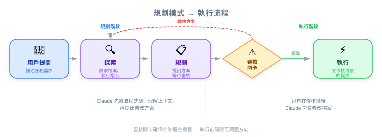
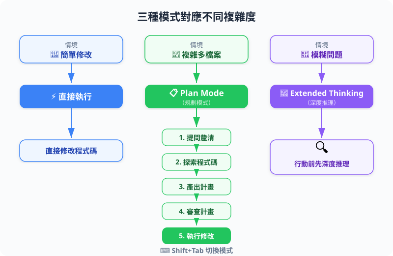
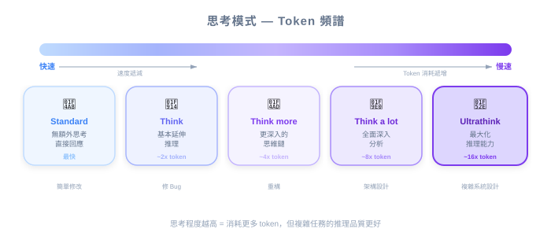

| 項目 | 細節 |
|---|---|
| 考試領域 | D1 — Agentic Coding Fundamentals (22%), D3 — Effective Claude Code Usage (30%) |
| Task Statements | 3.4 ★★★ (plan mode vs direct), 3.5 ★★★ (iterative refinement), 1.1 ★ (agentic loops) |
| 考試情境 | S2 (Code Gen), S4 (Developer Productivity) |
| 來源 | claude-code-in-action / 02-getting-started / Lesson 08（影片 + 文字） |
Claude Code 提供三種操作模式應對不同複雜度：直接執行用於簡單變更，Planning Mode 用於複雜的多檔案重構，Thinking Modes 用於模糊問題的深度推理。
告訴 Claude 要改什麼最精確的方式是展示給它看：
🎬 講師影片洞察
講師示範貼上 uigen 應用的截圖並請 Claude 修改 UI。他特別強調用 Ctrl+V — 「是 Ctrl+V，不是 Cmd+V」— 因為這是 Claude Code 用於圖片貼上的快捷鍵。
這是多模態輸入 — Claude 同時處理圖片和文字指令來理解變更。截圖消除了關於你指的是哪個元素的歧義。


Planning Mode 是 Claude Code 處理複雜、多檔案變更的機制。它將規劃與執行分離。
按 Shift+Tab 兩次（如果已經自動接受編輯則按一次）：
一般模式： 提問 → Claude 立即執行
Plan Mode：提問 → Claude 規劃 → 你審核 → Claude 執行
┌──────────┐ ┌─────────────────┐ ┌──────────────┐
│ 你提問 │───→│ Claude 探索 │───→│ Claude 規劃 │
└──────────┘ │（讀取檔案、 │ │（逐步 │
│ 搜尋程式碼） │ │ 行動清單） │
└─────────────────┘ └──────┬───────┘
│
▼
┌──────────────┐
│ 你審核 │
│ 計畫 │
└──────┬───────┘
│
┌─────────┴─────────┐
▼ ▼
┌──────────┐ ┌──────────┐
│ 核准 │ │ 重新導向 │
│ → 執行 │ │ → 重新規劃│
└──────────┘ └──────────┘
💡 關鍵洞察
Planning Mode 不只是「較慢的執行」。它是根本不同的工作流，在行動前蒐集更多 context。規劃階段的額外檔案讀取通常能捕捉到直接執行會遺漏的相依性和邊界情況。
| 使用 Planning Mode | 使用直接執行 |
|---|---|
| 多檔案重構 | 單檔案編輯 |
| 架構變更 | 簡單 bug fix |
| 跨模組的新功能實作 | 新增一個 CSS class |
| 不確定範圍的任務 | 確切知道要改什麼 |
| 不熟悉的程式碼庫 | 充分理解的程式碼 |

Thinking modes 在回應前給 Claude 更多 token 進行內部推理。這與 Planning Mode 是正交的 — 它們解決不同的問題。
| 模式 | 推理深度 | 最適合 |
|---|---|---|
| （預設） | 標準 | 多數任務 |
| "Think" | 基本延伸 | 中等複雜度 |
| "Think more" | 延伸 | 複雜邏輯 |
| "Think a lot" | 全面 | 多步演算法 |
| "Think longer" | 延長時間 | 深度分析 |
| "Ultrathink" | 最大化 | 最困難的問題、模糊需求 |
每個級別逐步給 Claude 更多 token 進行內部推理。
🎬 講師影片洞察
講師解釋 thinking modes 給 Claude「更多 token 來推理問題」。他將 ultrathink 定位為最大推理能力，在 Claude 掙扎於特別複雜或模糊的任務時很有用。他也提到成本取捨：「兩個功能都消耗額外的 token。」
這是考試最重要的區別之一：
| 維度 | Planning Mode | Thinking Mode |
|---|---|---|
| 做什麼 | 讀取更多檔案，建立行動計畫 | 更深度地推理問題 |
| 複雜度類型 | 廣度 — 多檔案、多元件 | 深度 — 複雜邏輯、模糊需求 |
| 輸出 | 你在執行前審核的計畫 | 更徹底推理的回應 |
| 啟動 | Shift+Tab（切換） | 在 prompt 中加關鍵字（"think"、"ultrathink"） |
| 使用者互動 | 審核-核准循環 | 不需要額外互動 |
| 成本驅動 | 更多檔案讀取（tool call） | 更多推理 token |
複雜度矩陣：
低推理 高推理
複雜度 複雜度
┌─────────────────┬─────────────────┐
低程式碼庫 │ 直接 │ Think / │
複雜度 │ 執行 │ Ultrathink │
├─────────────────┼─────────────────┤
高程式碼庫 │ Planning │ Planning + │
複雜度 │ Mode │ Thinking Mode │
└─────────────────┴─────────────────┘
💡 關鍵洞察
你可以組合兩種模式。對於需要理解多個檔案（廣度）又要解決複雜演算法（深度）的任務，使用 Planning Mode 加上 "think" 或 "ultrathink" 關鍵字。這讓 Claude 同時獲得廣泛 context 和深度推理。
完整的迭代工作流結合所有三種技術：
⚠️ 成本考量
Planning Mode 和 Thinking Modes 都消耗額外 token。Planning Mode 讀取更多檔案（tool call token）。Thinking modes 使用更多推理 token。在任務複雜度足以證明成本合理時使用，不要作為每個請求的預設。
| 概念 | 類比 | 為何合適 |
|---|---|---|
| 直接執行 | 請資深工程師修一個 typo — 直接做 | 簡單任務，不需要規劃 |
| Planning Mode | Sprint 前的架構審核 — 先規劃再建造 | 複雜任務需要前期探索 |
| Thinking modes | 給考試題目額外時間 | 更多時間 = 困難問題更好的推理 |
| Ultrathink | 困難設計問題的白板 session | 最大推理資源應對最大複雜度 |
| 截圖輸入 | 指著特定按鈕說「改這個」 | 視覺溝通消除歧義 |
| 考試概念 | 本課教了什麼 |
|---|---|
| Plan mode vs direct (3.4) ★★★ | Planning Mode 用於多檔案/複雜任務；直接用於簡單編輯。Planning 讀取更多檔案並建立可審核的計畫。 |
| Iterative refinement (3.5) ★★★ | 提問 → 實作 → 審核 → 回饋 → 改進循環。截圖加速溝通。 |
| Agentic loops (1.1) ★ | 迭代改進就是實踐中的 agentic loop — 蒐集 context、規劃、行動、評估、重複。 |
關鍵考試區別：
🎯 考試筆記
當考試呈現「複雜多檔案重構」情境時，答案幾乎總是涉及 Planning Mode。當情境涉及「模糊需求」或「複雜演算法」時，答案涉及 Thinking Modes。兩者同時出現時，組合使用。
一位開發者需要重新命名一個在 Node.js monorepo 中被 15 個檔案引用的資料庫欄位。哪種方法最合適？
一位開發者被指派設計新的快取策略，涉及修改資料存取層、API 路由和設定系統。最佳快取演算法取決於程式碼庫中的特定存取模式。哪種方法最好？
一位初級開發者開始對每個請求都使用 "ultrathink"，包括簡單任務如「新增一個 console.log 語句」。他們的 token 使用量增加了 5 倍。你給什麼建議？
| 反模式 | 為何失敗 | 更好的方法 |
|---|---|---|
| 每個任務都用 Planning Mode | 簡單變更浪費 token；不必要地更慢 | 簡單、範圍明確的變更用直接執行 |
| 瑣碎任務用 ultrathink | 燒推理 token 卻無益處 | 將 thinking modes 保留給真正複雜的問題 |
| 從不用 Planning Mode | 多檔案變更中遺漏相依性 | 範圍不明確或跨多檔案時啟用 Planning Mode |
| 只用文字描述 UI 變更 | 有歧義 — 「左邊的按鈕」可以指很多東西 | 貼截圖並指向特定元素 |
| 跳過 Planning Mode 的審核步驟 | 失去意義；可能執行有缺陷的計畫 | 核准執行前永遠審核計畫 |
| 用 Cmd+V 而不是 Ctrl+V 貼截圖 | 圖片不會貼入 Claude Code | 截圖貼上專用 Ctrl+V |